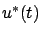
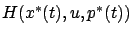
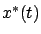
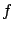
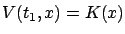
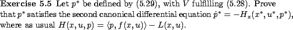

Here we focus on the necessary conditions for optimality provided by the HJB equation (5.10) and the Hamiltonian maximization condition (5.14) on one hand and by the maximum principle on the other hand. There is a notable difference in how these two necessary conditions characterize optimal controls. In order to see this point more clearly, assume that the system and the cost are time-invariant. The maximum principle is formulated in terms of the canonical equations

of the optimal control must maximize
with respect to
but also on the costate
As another point of comparison, it is interesting to recall how much longer and more complicated our proof of the maximum principle was compared with our derivation of the necessary conditions based on the HJB equation. This difference is especially perplexing in view of the striking similarity between the two Hamiltonian maximization conditions (5.26) and (5.27). We may wonder whether it might actually be possible to give an easier proof of the maximum principle starting
from the HJB equation. Suppose that  is an optimal control and
is an optimal control and  is the corresponding state trajectory. Still assuming for simplicity that
is the corresponding state trajectory. Still assuming for simplicity that

and
as in (5.3), then the boundary condition for the costate (5.29) is
In the proof of the maximum principle, the adjoint vector  was defined as the normal to a suitable hyperplane. In our earlier discussions in Section 3.4, it was also related to the momentum and to the vector of Lagrange multipliers.
From (5.29) we now have
another interpretation of the adjoint vector in terms of the gradient of the value function, i.e., the sensitivity of the optimal cost with respect to the state
was defined as the normal to a suitable hyperplane. In our earlier discussions in Section 3.4, it was also related to the momentum and to the vector of Lagrange multipliers.
From (5.29) we now have
another interpretation of the adjoint vector in terms of the gradient of the value function, i.e., the sensitivity of the optimal cost with respect to the state  .
In economic terms, this quantity corresponds to the ``marginal value," or ``shadow price"; it tells
us by how much we can increase benefits by increasing
resources/spending, or how much we would be willing to pay someone
else for resources and still make a profit.
.
In economic terms, this quantity corresponds to the ``marginal value," or ``shadow price"; it tells
us by how much we can increase benefits by increasing
resources/spending, or how much we would be willing to pay someone
else for resources and still make a profit.
At this point, the reader may be puzzled as to why we cannot indeed deduce the maximum principle from the HJB equation via the reasoning just given. Upon careful inspection, however, we can identify one gap in the above argument: it assumes that the value function has a well-defined gradient and, moreover, that this gradient can be further differentiated with respect to time (to obtain the adjoint equation as in Exercise 5.5). In other words, we need the existence of second-order partial derivatives of  . At the very least, we need
. At the very least, we need  to be a
to be a
 function--a property that we have in fact assumed all along, starting with the Taylor expansion (5.7).
The next example demonstrates that, unfortunately, we cannot expect this to be true in general.
function--a property that we have in fact assumed all along, starting with the Taylor expansion (5.7).
The next example demonstrates that, unfortunately, we cannot expect this to be true in general.